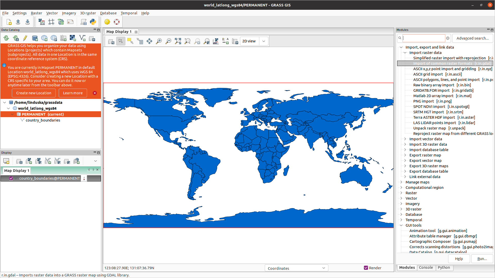

New Major Release of GRASS GIS
Verónica Andreo
& Vaclav Petras, Martin Landa, Anna Petrasova, Markus Neteler

Open Data Science Europe Workshop
Wageningen, 2021
Community & Shared Improvements
- GRASS GIS community:
- Provides software to the public.
- Shares its source code.
- Includes latest additions.

Credit goes to the whole community, not just this talk's authors.
Real Virtual Community
- Open community of users and developers
- Contributors to code, documentation, translations, …
- Project Steering Committee
- PSC Chair: Verónica Andreo

Access to Source Code
Documentation links to relevant parts of the source code.
by Luca Delucchi
Scientific Foundation
- references to related scientific papers
- references to papers associated with a tool

Return of Investment
- Emphasis on backwards compatibility
- No increasing license fees over time
- Employer-independent
- Contractor-independent

All-in-one
- All matured tools available right away
- Download of experimental tools possible
- Network analysis, hydrology, remote sensing, …

GRASS GIS 8
- Roadmap:
- 7.8.6 Fall 2021
- Old but still good.
- 8.0.0 Fall 2021
- First release in a new era.
- 8.0.1 Winter 2021
- What did we miss?
- 8.2.0 Spring 2022
- Enjoy the GSoC 2021 results!
- 7.8.6 Fall 2021

Dark Theme Support
Interface respects system dark theme.
by Anna Petrasova, Nicklas Larsson
Improved First-time User Experience
Initial project sets up automatically. Guidance provided for next steps.
by Linda Kladivova & rest of the community (many reviews, calls, user surveys, …)
Centralized Data Management
All data manipulation centered around revamped Data tab.
by Linda Kladivova, Anna Petrasova, Vaclav Petras
Skeletons and Centerlines
v.voronoi tool can now create area skeletons and centerlines.
by Markus Metz
Faster External Data Links
r.external links (opens) external raster data (GeoTiffs, …) faster.(2-5× faster, or almost no time for some workflows)

by Markus Metz
Great for workflows when only portion of the data is processed in GRASS GIS.
LiDAR data import with PDAL
- import of any point dimension (including user defined ones e.g. from PDAL filters)
- support of 19 binning methods (including eigenvalues)
- point filtering by values in any dimension


by Vaclav Petras and Māris Nartišs
GitHub-centered Software Development
- "Fork me on GitHub"
- Filling out issues (tickets) requires only GitHub login.
- All issues are publicly visible.

Code Quality
- Python code formatted by Black.
- Python code checked against Flake8.
- Most of warnings in C code removed and now checked.
- Code tested with CodeQL.
- Flake8 and Black checks also for Addons.
by Nicklas Larsson, Vaclav Petras, Anna Petrasova, Carmen Tawalika, ...
Support
- Community support
- user mailing list (with vast archives since 1991)
- GIS StackExchange
- …
- Commercial support
FUTURES
r.futures - set of tools for urban growth modeling

by NC State Center for Geospatial Analytics
See poster:
FUTURES v2: Urban Growth Modeling at Scale
Thursday, 5pm
PoPS
r.pops.spread - Pest or Pathogen Spread simulation

by NC State Center for Geospatial Analytics
Tangible Landscape
Geospatial tangible user interface

by NC State Center for Geospatial Analytics
Valley Bottom Flatness Index
r.valley.bottom - Multi-resolution Valley Bottom Flatness (MrVBF)

by Helmut Kudrnovsky, Steven Pawley
Sentinel, MODIS, Landsat, NED, NAIP
Automated download and import of common datasets i.sentinel, i.modis, i.landsat.download, r.in.usgs, …

by Luca Delucchi (Fondazione Edmund Mach), Martin Landa (OpenGeoLabs), Anika Weinmann (mundialis), Guido Riembauer (mundialis), Roberta Fagandini (GSoC), Zechariah Krautwurst (GSoC), Anna Petrasova (NC State University), Vaclav Petras (NC State University), Veronica Andreo (CONICET), …
Google Summer of Code 2021
OpenMP parallelization by Aaron Saw Min Sern
- r.series
- r.univar
- r.neighbors
- r.patch
- r.resamp.interp
- r.resamp.filter
- r.mfilter
- r.slope.aspect
+ benchmarking library

Coming in 8.2
Google Summer of Code 2021
Single-Window GUI by Linda Kladivova
Code refactoring to enable Single-Window GUI with dockable widgets.
Coming in 8.2
Google Summer of Code 2021
Integration of GRASS GIS and Jupyter Notebooks by Caitlin Haedrich

New Python library, that simplifies the launch of GRASS GIS in Jupyter and displaying raster/vector data.
GRASS Sentinel Addons
Access & Downloading → Importing → Preprocessing → Analysis

Contains modified Copernicus Sentinel data (2021)
Access & Downloading
- i.sentinel.coverage
- i.sentinel.download
- ESA Copernicus Open Access Hub
- USGS Earth Explorer
- Google Cloud Storage

Importing
- i.sentinel.import
- selection of individual bands
- import of metadata, band reference, cloud masks
- t.sentinel.import
- r.s1.grd.import

Importing
- Importing into a space-time raster dataset with t.sentinel.import

Preprocessing
- i.sentinel.mask
- t.sentinel.mask
- i.sentinel.preproc
- i.sentinel-2.sen2cor
- t.rast.mosaic
- i.sar.speckle
Preprocessing: cloud masking with i.sentinel.mask

Preprocessing: temporal image mosaicking with t.rast.mosaic

Preprocessing: Sentinel-1 data
- r.s1.grd.import
- requires ESA's SNAP software
- complete SAR preprocessing chain

Applications
Nationwide land-cover mapping
GRASS modules in use (excerpt):
- i.vi
- t.rast.series
- r.learn.ml2
- r.change.info

Applications
Forest monitoring
GRASS modules in use (excerpt):
- r.mapcalc
- r.learn.ml2
- r.texture
- r.resamp.interp


Applications
Flood Mapping
GRASS modules in use (excerpt):
- r.mapcalc
- i.segment
- t.rast.algebra
- t.rast.series


Resources
- Documentation:
- Tutorials:
-
Books:
- Open Source GIS: A GRASS GIS Approach
- Tangible Modeling with Open Source GIS
- GIS-based Analysis of Coastal Lidar Time-Series
- Open Source Approaches to Spatial Data Handling
Twitter: VeronicaAndreo
LinkedIn: Veronica Andreo
veroandreo.github.io/grass-gis-talks
Thank you for your attention!